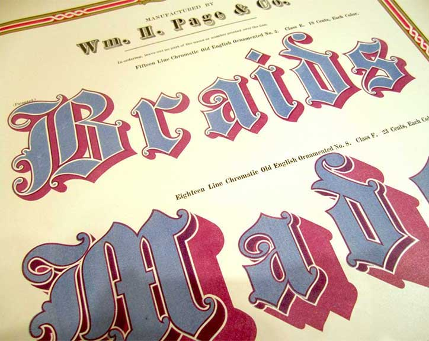
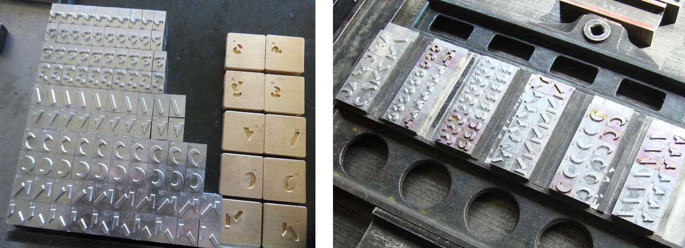
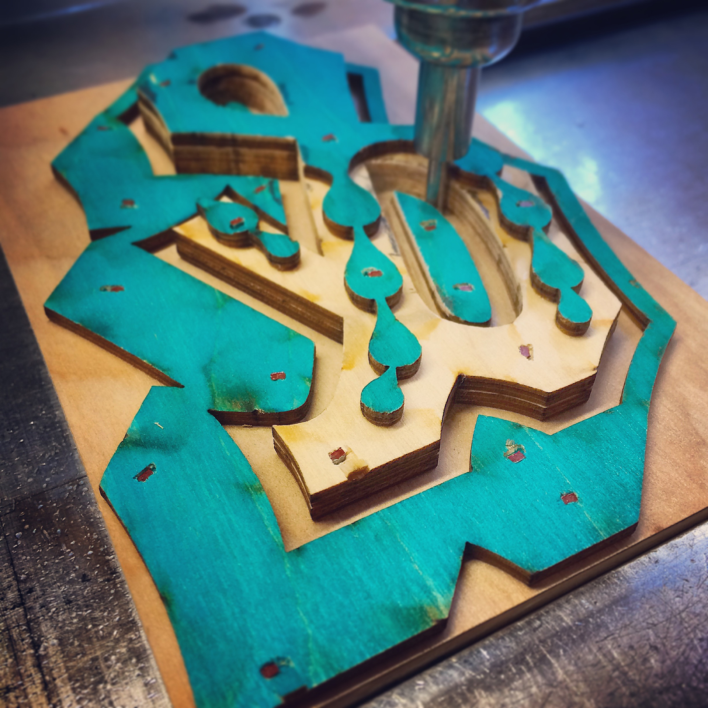
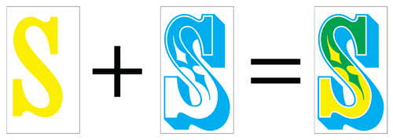

Color fonts represent an evolutionary step for digital typography by introducing rich graphic features into font files. However, in the letterpress world, color fonts or chromatic fonts are not new.(Note that colors fonts are sometimes referred as chromatic fonts, which is actually a bit more accurate since they may include multicolored, grayed or even single-tone characters.) The first crhomatic types appeared in the 1840s, reaching a peak of precision and complexity a few decades later as efficiencies in printing enabled greater creative freedom. In 1874, William H. Page published his 100-page Specimens of Chromatic Type & Borders that still has the power to mesmerize designers today.

William H. Page & Co. The Specimens of Chromatic Wood Type, Borders, Etc. Photos: Becca Hirsbrunner
>>> The Specimens of Chromatic Type & Borders
When printing with wood or lead type, the limitation to one color per glyph is inherent. Chromatic effects are achieved by stacking two or more corresponding type styles one on top of another in different colors. Each style has cut-away areas to reveal or overlap the color of the style beneath. This has been done beautifully and pictures of some magnificent examples are available online. Using overprinting the impression of three colors can be achieved with just two colors.

The process of making Bixa by Mark van Wageningen


Simulation of two overprinting colors resulting in a third.
The use of chromatic type declined in the 20th century, due to technical reform and changing fashions. However, advances in digital technology over the last few years have enabled easier production and wider support for chromatic typefaces. This has led to a resurgence of chromatic designs that have steadily appeared in bestseller charts, award lists and have been picked for a variety of decorative titles and logos.